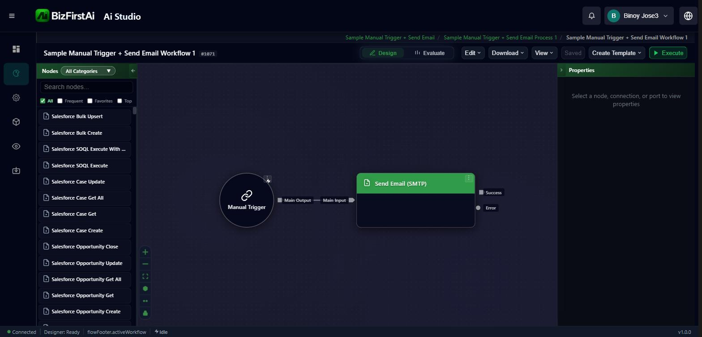
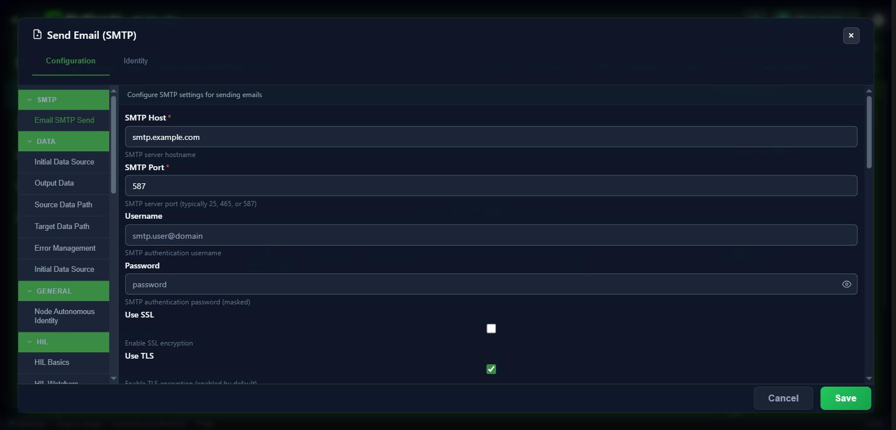

A real workflow (Manual Trigger → Send Email via SMTP) built entirely through the Workflow MCP tools, verified at three levels: the MCP responses themselves, the raw database rows, and the real Flow Studio Designer UI. This was the first time this module's write path had ever been exercised end to end — it surfaced and fixed three real bugs along the way.
All three were found by actually building something real, not by code review alone — each confirmed via the live server log or a direct SQL check before being called "fixed."
create_workflow_project crashed on every callStudioProjectService.ValidateAndDeserializeRequest called request.Data.ToString() assuming it was already JSON text — true for a real HTTP caller (ASP.NET Core's model binder produces a JsonElement, whose ToString() yields raw JSON), but the MCP tool passes an already-typed CreateProjectWithStructureRequest object directly (in-process call, no HTTP hop). .ToString() on that returns the CLR type's full name ("BizFirst.Ai....") — hence the real error, 'B' is an invalid start of a value. Fixed at the service level (handle the already-typed case explicitly) rather than special-casing the MCP tool, since this same bug would hit any future in-process caller.
email-smtp's advertised schema had a silent-failure casing bugThe DB ConfigurationSchema column (what get_node_type_schema returns) listed the username field as username, but the real executor reads it case-sensitively as userName (capital N) — already documented as a known gap in this project's own RAG doc, but never actually fixed in the database. An agent following the tool's own advertised schema exactly would silently build a node that falls back to anonymous SMTP relay instead of authenticating, with no error at any layer. Fixed the DB row directly (one JSON key rename) so every future get_node_type_schema call returns the correct key.
list_workflows silently missed real matchesThe search filter was applied client-side, but only against the first page of unfiltered results (default 50 rows) — with 65 real workflows in this tenant, a workflow outside that first page was invisible to search even though totalRecords correctly reported the true count. This is exactly the "find a workflow you don't already have the ID for" scenario the tool exists for. Fixed using the same "fetch effectively-all via a large PageSize" pattern already established elsewhere in this codebase, applying the caller's real pagination to the filtered result afterward.
UsernameEven after fixing the DB schema casing (bug #2), the real Designer UI's SMTP config dialog still shows the Username field as an empty placeholder rather than the real configured value — the Designer's own form has a separate, hardcoded field-to-JSON-key binding, independent of both the DB schema and the executor. Screenshot below. This is a genuine, distinct frontend bug worth a follow-up task; not chased further here to stay in scope.
| Entity | Real ID |
|---|---|
| Project | 1063 |
| App | 1065 |
| Process | 1073 |
| ProcessThread (the workflow itself) | 1071 |
| ProcessThreadVersion | 1069 |
| Manual Trigger node | ProcessElementID 2317 (type 297) |
| Send Email (SMTP) node | ProcessElementID 2318 (type 129) |
| Connection (trigger → email) | ConnectionID 1291 |
Verified independently three ways: the MCP get_workflow response, a direct SQL query against Process_ProcessElements/AIExt_Connectors/Process_Connections (confirmed the Connector-pairing invariant — one connector row per node, correctly paired), and the real Flow Studio Designer canvas.

Fig. 1 — Real Flow Studio Designer canvas, opened independently of MCP. Both MCP-created nodes render correctly with their ports (Manual Trigger's Main Output, Send Email's Main Input/Success/Error), and the connector between them is intact — confirming the module's Connector-pairing invariant holds for MCP-created workflows.

Fig. 2 — The node's real config dialog. Host (smtp.example.com) and Port (587) display correctly (proving the node's configuration round-trips through the real UI), but Username shows the placeholder smtp.user@domain instead of the real configured value — this is bug #4 above.
Lists all 49 tools live on this server (Atlas Forms, Credentials, Workflow, App Studio combined) — confirmed all 13 Workflow tools present with real, current schemas, used throughout this test instead of guessing param shapes.
Creates an App + Process + ProcessThread in one call. First call failed with the bug above; second call (after the fix) succeeded.
{"projectName":"Sample Manual Trigger + Send Email",
"projectDescription":"MCP test workflow: manual
trigger fires an SMTP email send node"}{"success":true,"data":{
"projectID":1063,"appID":1065,
"processID":1073,"processThreadID":1071,
"processThreadVersionID":1069,
"projectName":"Sample Manual Trigger + Send Email"}}Read the real config/port schema for both node types before using them — this is what surfaced bug #2 (the username vs userName casing gap), by cross-referencing the tool's own output against the project's RAG documentation.
{"nodeTypeCode":"manual-trigger"}
→ processElementTypeID: 297, empty config,
one output port "main"{"nodeTypeCode":"email-smtp"}
→ processElementTypeID: 129, requires
resource/operation/host/port/fromEmail/toEmail,
one input port "main", outputs "main"+"error"Called twice — once per node. Each call creates the node's paired Connector record automatically (confirmed via SQL: connectors 2288/2289, one per node, correctly linked).
{"processThreadVersionId":1069,
"processElementTypeId":297,
"processElementKey":"trigger-1",
"displayName":"Manual Trigger",
"positionX":100,"positionY":150,
"configuration":"{}","isTrigger":true}
→ {"processElementID":2317}{"processThreadVersionId":1069,
"processElementTypeId":129,
"processElementKey":"send-email-1",
"displayName":"Send Email (SMTP)",
"positionX":400,"positionY":150,
"configuration":"{...real SMTP config...}",
"isTrigger":false}
→ {"processElementID":2318}Wired the trigger's main output to the email node's main input, Standard connection type.
{"processThreadVersionId":1069,
"sourceProcessElementId":2317,"sourcePortKey":"main",
"targetProcessElementId":2318,"targetPortKey":"main",
"connectionTypeId":1,"condition":null}{"success":true,"data":{"connectionID":1291}}Read the complete saved workflow back — both nodes, the edge, and each node's real Connector ID, confirming the round trip.
{"processThreadId":1071}{"success":true,"data":{
"nodes":[{...2317, connectorID:2288...},
{...2318, connectorID:2289...}],
"edges":[{"connectionID":1291,
"sourceProcessElementID":2317,
"targetProcessElementID":2318}]}}Used to apply the bug #2 fix to this workflow's own node (rewriting username → userName). Real param name is configurationJson, not configuration — differs from add_workflow_node's param naming, worth knowing.
{"processElementId":2318,"configurationJson":"{...corrected config with userName...}"}
→ {"success":true}
This is the tool bug #3 was found in. First call (before the fix) returned an empty result for a workflow that definitely existed; second call (after the fix, fresh server build) correctly found it.
{"search":"Sample Manual Trigger",
"page":1,"pageSize":10}
→ {"workflows":[],"totalRecords":65}{"search":"Sample Manual Trigger",
"page":1,"pageSize":10}
→ {"workflows":[{"processThreadID":1071,
"name":"Sample Manual Trigger + Send Email
Workflow 1", ...}],"totalRecords":1}Checked for an existing, reusable SMTP credential before attempting attach_node_credential — none exists in this environment.
{"filter":{"credentialTypeID":null,"typeCode":"SMTP_BASIC","activeOnly":true,"page":1,"pageSize":20}}
→ {"success":true,"data":{"credentials":[],"pageNumber":1,"pageSize":20}}
No usable SMTP credential exists in this environment (confirmed above via find_credentials), so neither attach_node_credential nor an actual execution run could be exercised. Per this session's standing rule, no fake credential was fabricated and no real email send was attempted. This mirrors the same accepted "blocked on real credentials" pattern already established for the GitHub MCP test earlier this session — not a failure of the module, a real environment gap.
Not independently re-demonstrated in this pass — list_node_types was already proven working in an earlier session pass (the read-only connectivity check that preceded this test); save_workflow is the bulk/atomic alternative to the incremental add_workflow_node/add_connection path already exercised above and wasn't needed for a 2-node workflow; update_workflow_node/delete_workflow_node/delete_connection are the natural next candidates for a follow-up edit-and-teardown test.
| File | Change |
|---|---|
StudioProjectService.cs | Root-cause fix for bug #1 — handles an already-typed Data object, not just JSON text. |
Process_ProcessElementTypes (DB row, ProcessElementTypeID 129) | Root-cause fix for bug #2 — ConfigurationSchema's username key renamed to userName to match the real executor. |
ListWorkflowsTool.cs | Root-cause fix for bug #3 — search now runs against the real full result set, not just the first unfiltered page. |
The email-smtp.md RAG doc's own Gotchas section already correctly warned about the username/userName casing trap — it just hadn't been used to actually fix the live DB row until this test cross-referenced it against a real MCP call. No RAG doc corrections were needed this pass; the existing docs were accurate throughout.